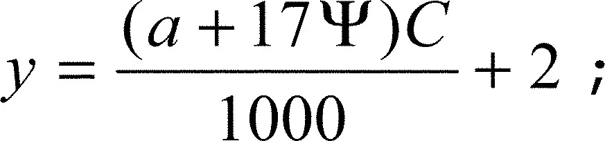

§ 84.19 High-speed craft
(a) The masthead light of high-speed craft may be placed at a height related to the breadth of the craft lower than that prescribed in § 84.02(a)(i), provided that the base angle of the isosceles triangle formed by the sidelights and masthead light, when seen in end elevation is not less than 27°.
(b) On high-speed craft of 50 meters or more in length, the vertical separation between foremast and mainmast light of 4.5 meters required by § 84.02(k) may be modified provided that such distance shall not be less than the value determined by the following formula:

Where:
y is the height of the mainmast light above the foremast light in meters;
a is the height of the foremast light above the water surface in service condition in meters;
Ψ is the trim in service condition in degrees;
C is the horizontal separation of masthead lights in meters.
Note to § 84.19:
Refer to the International Code of Safety for High-Speed Craft, 1994 and the International Code of Safety for High-Speed Craft, 2000.